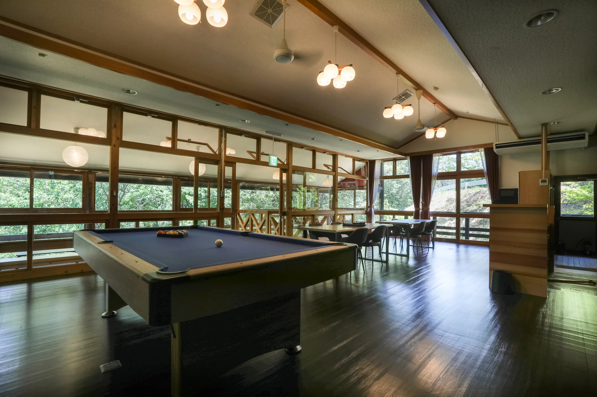
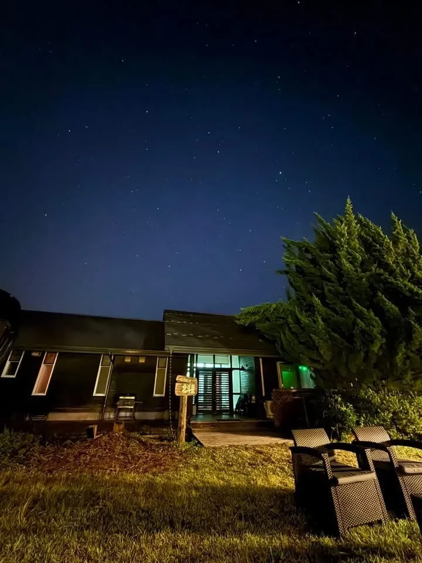
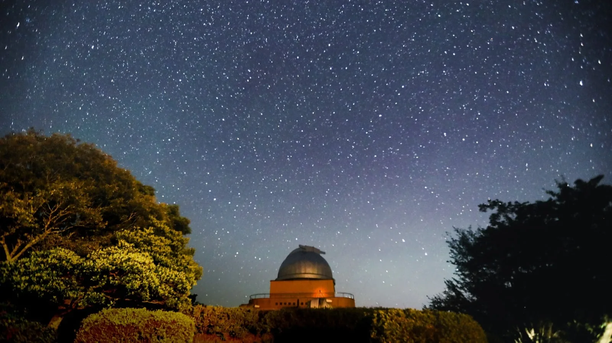
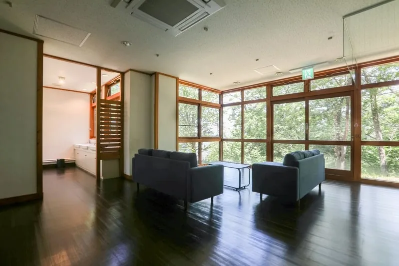
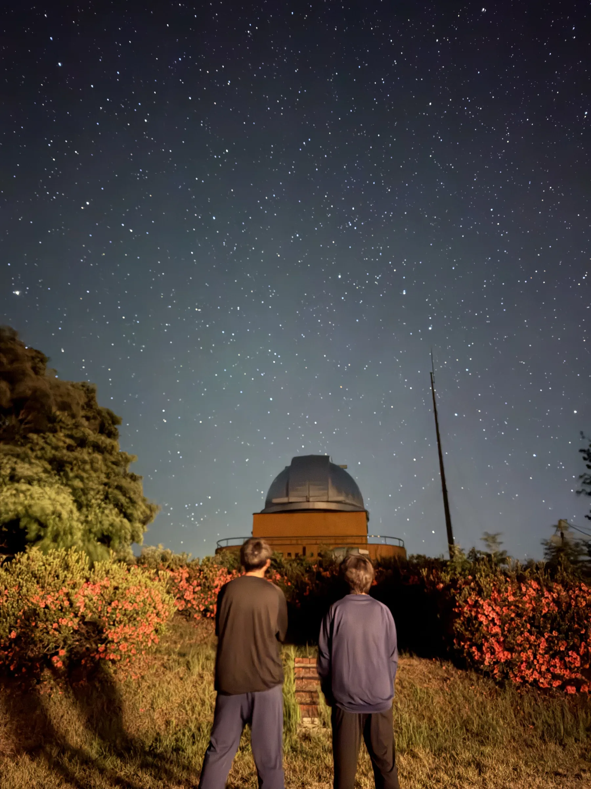
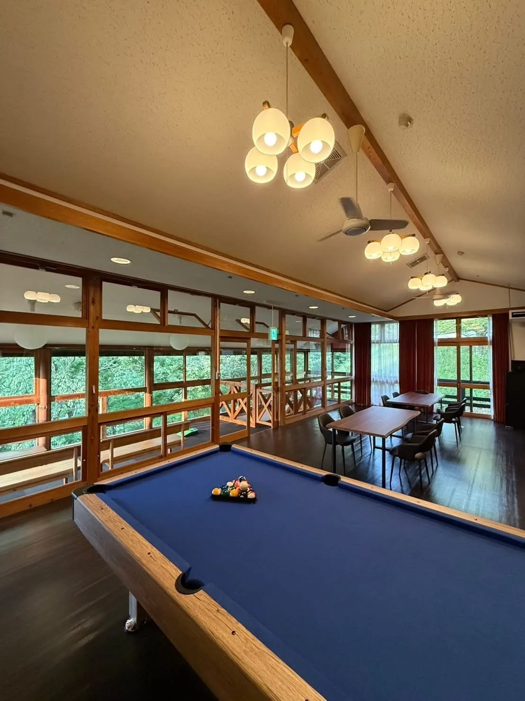
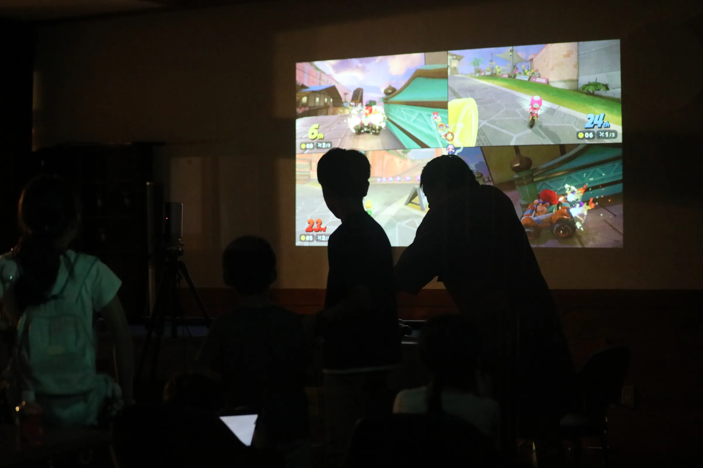
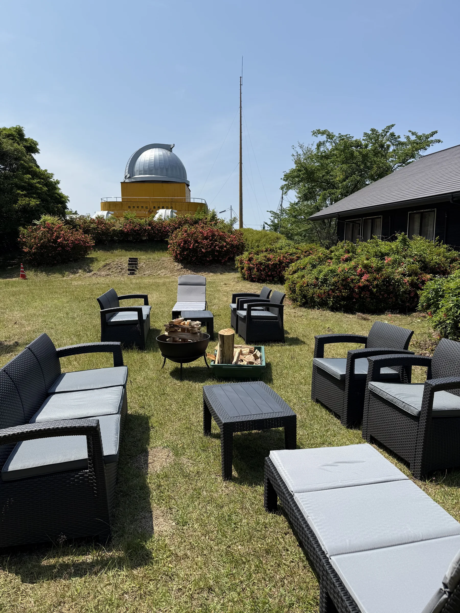

望遠鏡を覗いたあとも、
星を見る時間は終わらない。
玄関の外は、明かりの少ない山の夜。日原天文台で宇宙を見たあと、自分たちだけの一棟へ戻ります。




01 / CONCEPT
山の静けさ。仲間との時間。そして、頭上いっぱいに広がる星。
「宙」は宇宙、「辺」はほとり。313件の公募から選ばれ、夜空を覗く日原天文台に隣接するこの場所の名前になりました。
2025年7月7日グランドオープン。一日一組だけの一棟で、いつもとは少し違う夜を。
津和野町公式広報で紹介されています ↗02 / EXPERIENCE

玄関の外は、明かりの少ない山の夜。日原天文台で宇宙を見たあと、自分たちだけの一棟へ戻ります。


ビリヤード、卓球、ボードゲーム。プロジェクターでは映像配信サービスを楽しんだり、みんなでゲームをしたり。外が静かになるほど、一棟の内側にはみんなの声が残ります。


03 / OPTIONS & DINING
火を囲む時間を、滞在に合わせて追加できます。薪・食材・炭等はご持参ください。
04 / PRIVATE SPACE & FACILITY
630㎡の空間を一日一組で貸切。気になる場所をタップすると、写真と詳しい案内をご覧いただけます。
06 / STAY INFORMATION
料金、設備、ご到着からお支払いまで。ご予約前にご確認ください。
RATE / CAPACITY
50,000円税込・清掃費込／一棟貸切・1泊
最大21名。追加の布団を含む寝具料金は宿泊料金に含まれています。
有料オプション：焚き火台 5,500円（税込）／BBQグリル 5,500円（税込）／無煙ロースター 5,500円（税込）／ビリヤード 1,000円（税込）
CHECK IN / OUT
アーリーチェックイン・レイトチェックアウトは、それぞれ2時間につき5,000円（税込）です。ご希望の場合は予約時にお問い合わせください。
デジタルキーを使用します。ご予約後、解錠用の暗証番号をご案内します。
PAYMENT
施設から「予約成立」の連絡を行った時点で予約成立となります。直接予約のお支払いは銀行振込です。
支払期限は「宿泊日の10日前」または「予約日の翌日」のうち、宿泊日に近い日です。振込手数料はお客様負担となります。
期限までに入金を確認できない場合、予約をキャンセルすることがあります。
FACILITIES
CANCELLATION
SEASON / OBSERVATORY
日原天文台の休館日・開館時間は、公式ホームページで事前にご確認ください。
冬季は積雪や路面凍結のおそれがあります。必ず冬用タイヤを装着してお越しください。
館内には階段があります。無人施設のため、チェックイン前・チェックアウト後の荷物預かりと送迎は行っていません。
HOUSE RULES
ペットは備付けのケージ内でお過ごしください。汚損・破損等が生じた場合は別途費用を請求することがあります。
焚き火台は本体のみ、BBQグリルはグリルのみの貸出です。薪・食材・炭等はご持参ください。無煙ロースターは雨天時等にも利用できます。火気使用後は完全な消火と火の始末をお願いします。
生ゴミは袋にまとめ、必ず指定のゴミステーションへお持ちください。屋外等への放置は禁止です。
設備操作、非常時の対応、チェックアウト時の確認事項は、館内のハウスマニュアルでご案内します。
07 / FAQ & CONTACT
はい。630㎡の建物を一日一組で利用するプライベートコテージです。
隣接しています。休館日・開館時間は日原天文台の公式ホームページで事前にご確認ください。
一棟貸切1泊50,000円（税込・清掃費・寝具料金込み）です。直接予約のお支払いは銀行振込で、振込先はご予約確定後にご案内します。
お問い合わせ・予約窓口
06-7167-6048
roofllc0415@gmail.com
Instagram @sorabe_shimane ↗
平日 9:00〜18:00、土曜 9:00〜12:00
メールアプリが開きます。送信完了は、ご利用のメールアプリの送信済み画面でご確認ください。